| Sprites |
Every sprite: 89 as the listing lays them out, grouped by what uses them, and the two frames of the flower's run and the one sprite nothing uses beside them. A sprite is its image, a row at a time from the top, then a mask of the same size; its width and height are not in the sprite but in the record that shows it (+2, +3), and so in the template or the code that sets the sprite. Where the image has a bit set the pixel is ink; where neither has it is solid paper; where only the mask has, the room shows through -- here the blue-grey.
Each picture is drawn by the game: a record holding the sprite, drawn by REDRAW_OBJECT in SkoolKit's simulator with no other object in the room, over a clean copy of zeros and again of ones, and read back from the screen. Every one was checked against the sprite's bytes. Three kinds are turned round by the game itself, in memory, when they turn: the knight, the troll and the wraith; they are shown as stored and as turned by the game's own routine (MIMAN, MITRO, MIWRAI), and the turned pictures were checked against the bytes mirrored. Nothing else is ever mirrored: the guards have a run of frames for each way, and things do not turn.
Which sprite each creature shows is read from the code that chooses it; every address below comes from the game's instructions at this build.
The knight -- The guards -- The troll -- The wraith -- The ghost and the floating things -- Things and furniture -- Doors -- A sprite nothing uses
Fourteen frames of 24 by 31 from SPRITE9110, 186 bytes apart, all of them turned round in memory by MIMAN whenever he turns between a way that is drawn as stored and one that is mirrored: facing up x (Y to P) and down y (A to G) he is drawn as stored, up y (Q to T) and down x (H to ENTER) mirrored; towards the viewer (down y, down x) or away (up x, up y) chooses the frames. KNIGHT_CONTROLS (KNIGHT_CONTROLS) walks him through a run of three (ANIM plays 0, 1, 2, 1, 0 ...); standing, he shows the middle frame of the run, and now and then a fidget (CREATURE_UPDATE). A jump (KNIGHT_JUMP) shows the walking frames: the first as he takes off, then the walk goes on through the air. Fighting (B to M, or fire) he steps in three passes and holds the sword out three; picking up he stoops (PICK_UP). Each frame is shown as stored and as MIMAN turns it.
| As stored; as turned | Entry | What it shows | Size |
|---|---|---|---|
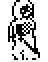 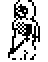 | SPRITE9110 $9110 | walking, towards the viewer, frame 0 | 24 by 31 |
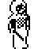 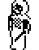 | SPRITE91CA $91CA | walking, towards the viewer, frame 1 | 24 by 31 |
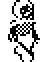 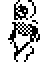 | SPRITE9284 $9284 | walking, towards the viewer, frame 2 | 24 by 31 |
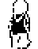 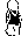 | SPRITE933E $933E | walking, away, frame 0 | 24 by 31 |
| SPRITE93F8 $93F8 | walking, away, frame 1 | 24 by 31 | |
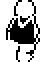 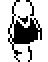 | SPRITE94B2 $94B2 | walking, away, frame 2 | 24 by 31 |
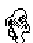 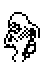 | SPRITE956C $956C | stooping to pick up, towards the viewer | 24 by 31 |
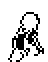 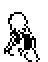 | SPRITE9626 $9626 | stooping to pick up, away | 24 by 31 |
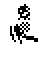 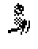 | SPRITE96E0 $96E0 | fighting, sword out, towards the viewer | 24 by 31 |
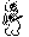 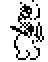 | SPRITE979A $979A | fighting, stepping in, towards the viewer | 24 by 31 |
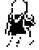 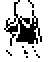 | SPRITE9854 $9854 | fighting, sword out, away | 24 by 31 |
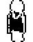 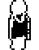 | SPRITE990E $990E | fighting, stepping in, away | 24 by 31 |
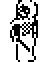 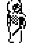 | SPRITE99C8 $99C8 | a fidget, towards the viewer | 24 by 31 |
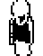 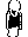 | SPRITE9A82 $9A82 | a fidget, away | 24 by 31 |
Types 26, 33 and 27 (CREATURE_UPDATE, CHE3D): four runs of three frames of 24 by 26, 156 bytes apart, one for each way a guard can go on the floor -- the later test wins, so going diagonally a guard shows the run of up y or down x -- and never mirrored. Between the second and third run lie the frames of a guard of type 27 rising out of the floor, chosen by a count as it rises: first the helmet, which is also what a guard killed by the sword becomes (OBJECTS_MEET), and the template's sprite for types 27 and 28.
| Sprite | Entry | What it shows | Size |
|---|---|---|---|
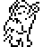 | SPRITE9F3C $9F3C | going down y, or standing, frame 0 | 24 by 26 |
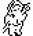 | SPRITE9FD8 $9FD8 | going down y, or standing, frame 1 | 24 by 26 |
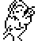 | SPRITEA074 $A074 | going down y, or standing, frame 2 | 24 by 26 |
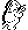 | SPRITEA110 $A110 | going up x, frame 0 | 24 by 26 |
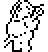 | SPRITEA1AC $A1AC | going up x, frame 1 | 24 by 26 |
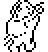 | SPRITEA248 $A248 | going up x, frame 2 | 24 by 26 |
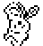 | SPRITEA554 $A554 | going down x, frame 0 | 24 by 26 |
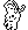 | SPRITEA5F0 $A5F0 | going down x, frame 1 | 24 by 26 |
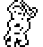 | SPRITEA68C $A68C | going down x, frame 2 | 24 by 26 |
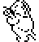 | SPRITEA728 $A728 | going up y, frame 0 | 24 by 26 |
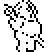 | SPRITEA7C4 $A7C4 | going up y, frame 1 | 24 by 26 |
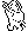 | SPRITEA860 $A860 | going up y, frame 2 | 24 by 26 |
| SPRITEA4B8 $A4B8 | the helmet: stage 0 of rising, and what a killed guard leaves | 24 by 26 | |
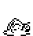 | SPRITEA41C $A41C | rising out of the floor, stage 1 | 24 by 26 |
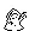 | SPRITEA380 $A380 | rising out of the floor, stage 2 | 24 by 26 |
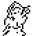 | SPRITEA2E4 $A2E4 | rising out of the floor, stage 3 | 24 by 26 |
Type 13 (CREATURE_UPDATE's state 7): six frames of 24 by 38, three towards the viewer and three away, turned round in memory by MITRO. The frames are shared by every troll, so the record's mirroring flag is true only because no room has two, and leaving a room turns them back (SAVE_OBJECT_POSITIONS).
| As stored; as turned | Entry | What it shows | Size |
|---|---|---|---|
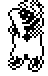 | SPRITE8BB8 $8BB8 | towards the viewer, frame 0 | 24 by 38 |
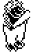 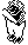 | SPRITE8C9C $8C9C | towards the viewer, frame 1 | 24 by 38 |
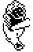 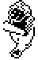 | SPRITE8D80 $8D80 | towards the viewer, frame 2 | 24 by 38 |
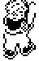 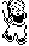 | SPRITE8E64 $8E64 | away, frame 0 | 24 by 38 |
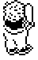 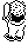 | SPRITE8F48 $8F48 | away, frame 1 | 24 by 38 |
| SPRITE902C $902C | away, frame 2 | 24 by 38 |
Type 45 (state 11), and type 56 once it wakes (CREATURE_UPDATE): one frame towards the viewer and one away, turned by MIWRAI, never animated.
| As stored; as turned | Entry | What it shows | Size |
|---|---|---|---|
| SPRITE5E88 $5E88 | towards the viewer | 16 by 32 | |
| SPRITE5F08 $5F08 | away | 16 by 32 |
Type 52, the ghost, which wanders and steals things it meets (state 13); type 51, the small hunched figure, and type 40, the small cloud, which hang and flicker (states 12 and 14); and type 48, the flower with a face, which strikes when the knight comes close (state 4, CHE3D). Each is a run of three frames. The flower's second and third frames lie in TYPE48_FRAMES, after its template's frame; the build's sessions never saw them, as no session stood the knight in front of one.
| Sprite | Entry | What it shows | Size |
|---|---|---|---|
| SPRITE5B30 $5B30 | the ghost, frame 0 | 16 by 23 | |
| SPRITE5B8C $5B8C | the ghost, frame 1 | 16 by 23 | |
| SPRITE5BE8 $5BE8 | the ghost, frame 2 | 16 by 23 | |
| SPRITE5B00 $5B00 | the small hunched figure, frame 0 | 8 by 8 | |
| SPRITE5B10 $5B10 | the small hunched figure, frame 1 | 8 by 8 | |
| SPRITE5B20 $5B20 | the small hunched figure, frame 2 | 8 by 8 | |
| SPRITE6104 $6104 | the small cloud, frame 0 | 16 by 10 | |
| SPRITE612C $612C | the small cloud, frame 1 | 16 by 10 | |
| SPRITE6154 $6154 | the small cloud, frame 2 | 16 by 10 | |
| SPRITE5C84 $5C84 | the flower with a face, frame 0 | 24 by 24 | |
| TYPE48_FRAMES $5D14 | the flower with a face, frame 1 (striking) a frame of the type-48 run, not a sprite entry of its own | 24 by 24 | |
| $5DA4 $5DA4 | the flower with a face, frame 2 (striking) a frame of the type-48 run, not a sprite entry of its own | 24 by 24 |
The sprites of the templates (see the object types): one frame each, never mirrored. Some serve two types -- the slabs, the helmet -- which differ in size or weight.
| Sprite | Entry | What it shows | Size |
|---|---|---|---|
| SPRITE5C44 $5C44 | type 53: a small flame | 8 by 16 | |
| SPRITE5C64 $5C64 | type 54: a small flame | 8 by 16 | |
| SPRITE5E34 $5E34 | type 50: a book | 24 by 14 | |
| SPRITE5F88 $5F88 | type 55: a black oval: a hole | 48 by 21 | |
| SPRITE6084 $6084 | type 56: a robed figure | 16 by 32 | |
| SPRITE7D00 $7D00 | type 0: a long table | 40 by 34 | |
| SPRITE7E54 $7E54 | type 3: a stool | 16 by 13 | |
| SPRITE7E88 $7E88 | type 2: a chequered ball | 24 by 21 | |
| SPRITE7F06 $7F06 | type 4: a shallow dish or a purse | 24 by 14 | |
| SPRITE7F5A $7F5A | type 5: a chest | 32 by 24 | |
| SPRITE801A $801A | type 1: a small crate | 24 by 20 | |
| SPRITE8092 $8092 | type 6: a tub | 16 by 17 | |
| SPRITE80D6 $80D6 | type 29: a small bottle | 16 by 10 | |
| SPRITE80FE $80FE | type 30: a loaf | 16 by 9 | |
| SPRITE8122 $8122 | type 31: a small round thing | 16 by 10 | |
| SPRITE814A $814A | type 32: a flat bundle | 24 by 13 | |
| SPRITE8198 $8198 | type 8: a barrel | 24 by 29 | |
| SPRITE8246 $8246 | type 9: a round flask | 16 by 16 | |
| SPRITE8286 $8286 | type 14: a key | 16 by 5 | |
| SPRITE829A $829A | type 17: a small lamp or bell | 16 by 10 | |
| SPRITE82C2 $82C2 | type 7: a framed picture | 24 by 26 | |
| SPRITE835E $835E | type 22: a suit of armour with a halberd | 24 by 41 | |
| SPRITE8454 $8454 | type 23: a potted plant | 24 by 21 | |
| SPRITE84D2 $84D2 | type 18: a flat square slab; type 24: a flat square slab | 40 by 18 | |
| SPRITE8586 $8586 | type 19: an upright slab | 24 by 24 | |
| SPRITE8616 $8616 | type 20: an upright slab, the other way; type 46: an upright slab | 24 by 24 | |
| SPRITE86A6 $86A6 | type 49: a bush | 24 by 24 | |
| SPRITE875A $875A | type 16: a round table | 24 by 17 | |
| SPRITE87C0 $87C0 | type 21: a cross, lying down | 24 by 8 | |
| SPRITE87F0 $87F0 | type 25: a goblet or a stand | 16 by 24 | |
| SPRITE9B3C $9B3C | type 34: an hourglass | 16 by 23 | |
| SPRITE9B98 $9B98 | type 35: a chain | 8 by 24 | |
| SPRITE9BC8 $9BC8 | type 36: a tall bottle | 8 by 24 | |
| SPRITE9BF8 $9BF8 | type 37: a figure lying down | 40 by 24 | |
| SPRITE9CE8 $9CE8 | type 38: the end of a bench | 24 by 24 | |
| SPRITE9D78 $9D78 | type 39: a bed | 40 by 24 | |
| SPRITE9EC8 $9EC8 | type 41: a tall pole | 8 by 32 | |
| SPRITE9F08 $9F08 | type 15: a small crown | 16 by 13 |
The doors that have a picture (the rest are drawn by the rooms' lines).
| Sprite | Entry | What it shows | Size |
|---|---|---|---|
| SPRITE8850 $8850 | type $52: the rim of a hole in the floor | 40 by 26 | |
| SPRITE8954 $8954 | type $47: a doorway | 24 by 51 | |
| SPRITE8A86 $8A86 | type $49: a doorway, facing the other way | 24 by 51 |
A sprite of 24 by 16 between two others (DIAGONAL_SPRITE): no template and no code names it, and the sessions never saw it on an object.
| Sprite | Entry | What it shows | Size |
|---|---|---|---|
| DIAGONAL_SPRITE $9E68 | a diagonal shaft not named by anything | 24 by 16 |